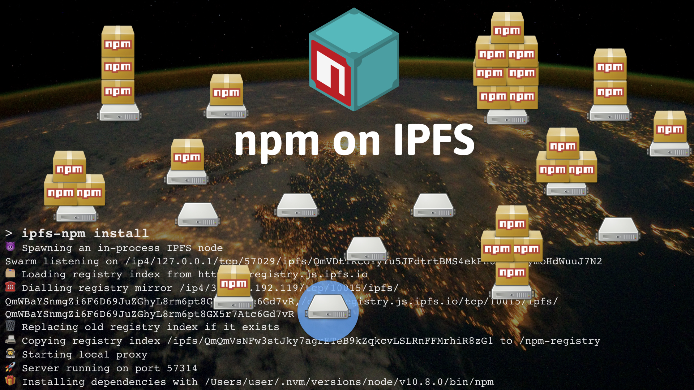
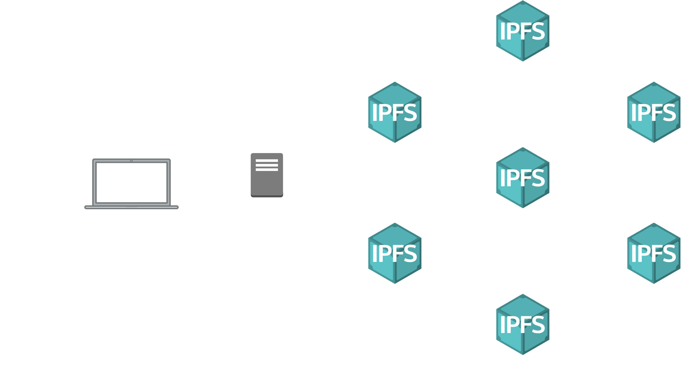

Alex Potsides
JavaScript Developer at Protocol Labs
Working on IPFS
@achingbrain on GitHub and Twitter



npm install --registry=https://registry.js.ipfs.io
yarn --registry=https://registry.js.ipfs.io

ipfs-npm
npm install -g ipfs-npm
ipfs-npm install
or
ipfs-yarn
Demo


Distributed publishing
https://github.com/zkat/pacote/pull/173
Publish a packument over IPNS
"my-module": "ipns://Qmfoo#^1.0.0"
npm-in-a-box
A local-network npm proxy on a Raspberry Pi
Cache npm modules for you
Connected to the IPFS network
Publish IPNS names for your published modules
Thanks!
https://github.com/ipfs/js-ipfs
https://github.com/ipfs-shipyard/npm-on-ipfs
https://github.com/ipfs-shipyard/ipfs-npm-registry-mirror
Alex Potsides
@achingbrain
Q&A
https://github.com/ipfs/js-ipfs
https://github.com/ipfs-shipyard/npm-on-ipfs
https://github.com/ipfs-shipyard/ipfs-npm-registry-mirror
Alex Potsides
@achingbrain